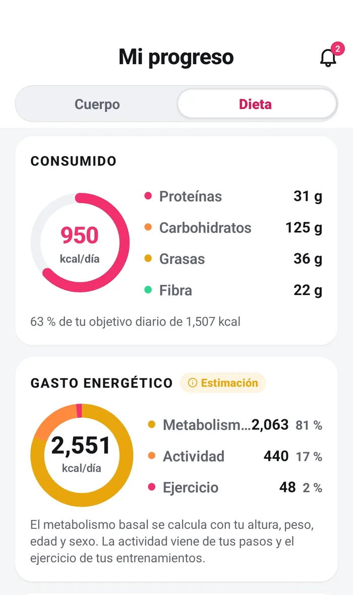
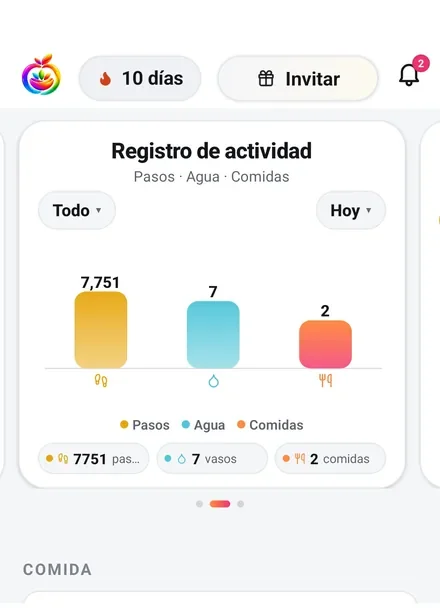
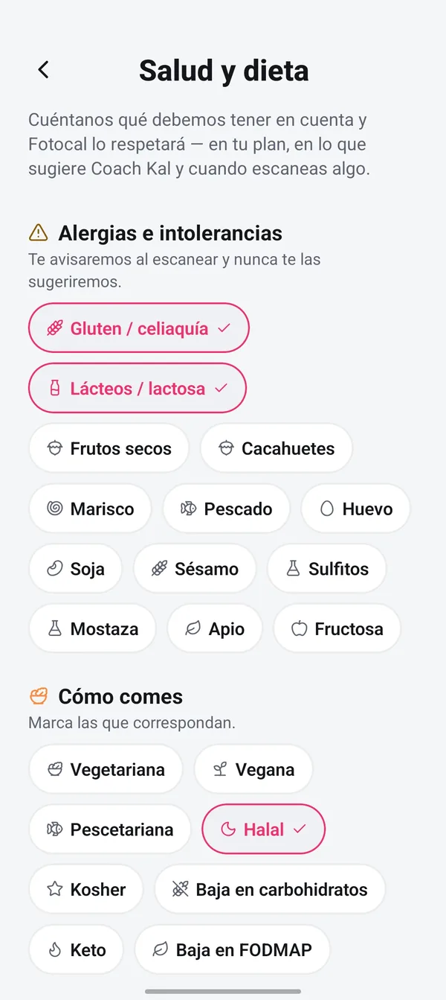
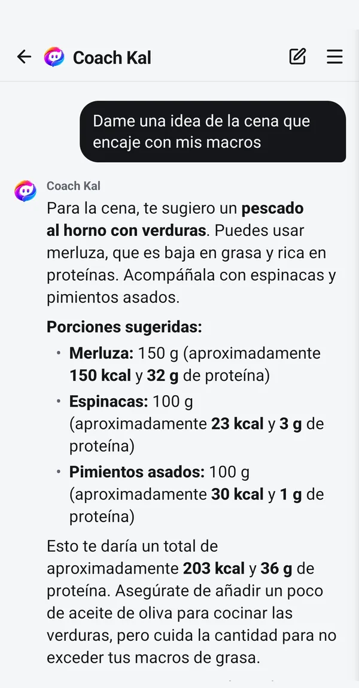

Entiende lo que comes — no solo cuánto.
Las calorías son un número. Fotocal te enseña además la proteína, los carbohidratos y la grasa que hay detrás de una comida, puntúa el alimento en sí y lleva el total del día frente a los objetivos que te has puesto. Qué haces con eso lo decides tú.

Cuatro lecturas de una sola foto.
Dos vienen con cada escaneo en el plan gratuito. La cuarta es donde el plan gratuito se acaba, y la página lo dice aquí en vez de dejar que lo descubras.
-
Calorías y macros
Cada comida se desglosa en calorías, proteínas, carbohidratos y grasas, y se suma al total del día frente a los objetivos que fijó tu plan. Gratis, en cada escaneo.

-
Una puntuación sobre 100, del alimento
Cada escaneo lleva una puntuación de 0 a 100 que valora el alimento en sí, con sus motivos listados debajo. Es una lectura de lo que hay en el producto, no una nota para quien se lo come. Gratis, en cada escaneo.

-
Agua, pasos y comidas en un sitio
El agua se registra junto a la comida, al lado de tus pasos y de las comidas que anotaste ese día. Gratis y sin tope.

-
Vitaminas y minerales: dos gratis
Cada escaneo lee la lista completa de micronutrientes, y el plan gratuito enseña los dos primeros. El resto queda bajo un candado, junto con la fibra, el azúcar, el sodio, las grasas saturadas y el nivel de procesamiento.

Cuatro formas de capturar una comida.
La que sea más rápida en ese momento. Los topes de abajo son los del plan gratuito, y son por día.
- Escaneo por foto — cualquier plato, hecho en casa o puesto delante. Dos al día en el plan gratuito.
- Código de barras — productos envasados, gratis y sin tope.
- Voz — di lo que has comido. Uno al día en el plan gratuito.
- Escaneo de cartas — fotografía la carta de un restaurante. Este necesita Premium.

Tú eliges el enfoque. Fotocal hace las cuentas.
Fotocal no tiene opinión sobre cuál de estos es el bueno, y no te va a poner en ninguno. El perfil mantiene dos listas separadas: trece alergias, que actúan como límites duros, y ocho formas de comer, que marcas si te aplican. Cuatro de ellas cambian el reparto de macros con el que trabaja la app.
- La dieta que fijes moldea lo que sugiere Coach Kal, siempre
- Las alergias actúan como límite, no como una preferencia que se sopesa
- Déjalo todo en blanco y la app funciona igual sin ello
- Cámbialo cuando quieras y los objetivos van detrás

Un número suelto no te dice gran cosa.
Coach Kal lee lo que has registrado y responde sobre ello en lenguaje llano. Es un asistente, no un nutricionista, y puede equivocarse: la app lo dice debajo de cada respuesta, y su propia página también.
- Gratis en todos los planes, sin límite de mensajes
- La pestaña de recomendaciones también es gratis, e ilimitada
- El informe semanal se abre en el plan gratuito; su tabla nutricional y su tarjeta de vitaminas y minerales necesitan Premium
Fotocal cuenta y explica. No receta.
Hay muchísimos consejos sobre lo que la gente debería comer. Esto no es uno de ellos.
- Ninguna forma de comer se recomienda por encima de otra, ni en la app ni en esta web. La lista de arriba es una lista, no un ranking.
- La puntuación valora el producto que tienes delante de la cámara. No es una nota del día, ni de la semana, ni de quien sostiene el móvil.
- La app no juzga una comida ni la llama un desliz. Una de las cincuenta etiquetas que puedes poner en un día es «día libre», pero la eliges tú, y nada en la app trata distinto un día con esa etiqueta.
- Las cifras son estimaciones. Una ración leída de una foto, un valor de base de datos y las propias cuentas de la app arrastran error.
Fotocal no es un producto sanitario, y esto no es consejo dietético
Si estás embarazada, convives con diabetes u otra condición, tomas medicación, eres menor de dieciocho años o tienes cualquier historial de un trastorno de la conducta alimentaria, habla con un médico o con un dietista-nutricionista antes de cambiar tu forma de comer o de usar un contador de calorías. Su criterio va por delante, y para algunas personas una app de seguimiento es la herramienta equivocada.
Preguntas sobre la parte nutricional
¿Qué mide en realidad la puntuación sobre 100?
Valora el alimento en sí, y la app lista sus motivos debajo del número para que veas qué lo ha movido en vez de creértelo sin más. No dice nada de ti, ni de tu día, ni de tu semana, y una puntuación baja no es una orden de devolver algo a la estantería.
¿Cuántas vitaminas y minerales veo en el plan gratuito?
Dos. El escaneo lee la lista entera en cualquier caso, y el plan gratuito enseña los dos primeros con el resto atenuado bajo un candado. La fibra, el azúcar, el sodio, las grasas saturadas y el nivel de procesamiento están en esa misma parte bloqueada de la pantalla.
¿Fotocal me dice qué tengo que comer?
No. Te enseña lo que lleva una comida y, después de escanear, te ofrece una alternativa que podrías tomar en su lugar. Coach Kal responde a lo que le preguntes. Nada de eso es un plan, y no se empuja ninguna forma de comer por encima de otra.
¿Tengo que elegir una dieta?
No. Existe la opción de ninguna dieta, y dejar el perfil de salud en blanco está bien: la app funciona sin ello. Si pones una, cuatro de las opciones cambian el reparto de macros con el que se construyen los objetivos, y todas moldean lo que sugiere Coach Kal.
Sigue leyendo
Respuestas más largas de las que cabe en una página de función, escritas por personas y no por una app.
Mira qué hay de verdad en tu próxima comida.
Fotocal se empieza gratis, con 5 días de prueba en el plan anual.
Descárgala gratis En Google Play · Android